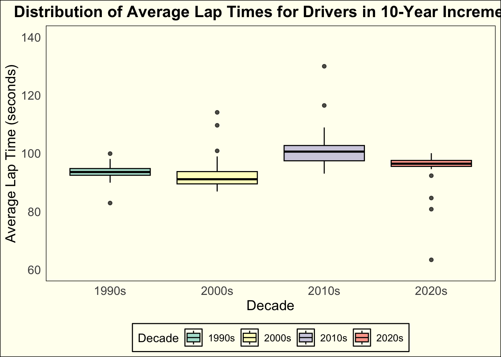

library(tidyverse)
library(here)Lets talk Formula 1!
Introduction
Formula 1, the pinnacle of motor sport, has undergone significant changes over the years, particularly in the design and technology of its cars. These changes have been driven by a desire to enhance safety, improve competition, and push the boundaries of engineering innovation. From the astounding V8 engines to the introduction of hybrid power units, Formula 1 has continuously evolved to meet the demands of both fans and stakeholders alike. In this analysis, we will delve into the rich data set of Formula 1 lap times to explore how the performance of these cars has evolved over the years through the technological advancements that have shaped the sport.
Throughout its history, Formula 1 has witnessed several eras characterized by distinct technological features. For instance, the era of naturally aspirated V8 engines, which spanned from 2006 to 2013, showcased the raw power and distinct sound signature of these high-revving power units. Cars from this period, such as the Ferrari F2008 and the Red Bull RB7, set blistering lap times on iconic circuits around the world.
Transition to Hybrid Power
However, in recent years, Formula 1 has been making significant steps towards sustainability and efficiency with the introduction of hybrid power units. The V6 turbocharged hybrid era, which began in 2014, marked a significant departure from the traditional combustion engines. Teams like Mercedes and Ferrari invested heavily in hybrid technology, resulting in cars that not only delivered exceptional performance but also improved fuel efficiency and reduced emissions.
Regulatory Changes
Beyond power units, Formula 1 has also witnessed numerous regulatory changes aimed at enhancing competition and safety. Adjustments to aerodynamic regulations, such as the introduction of the Halo cockpit protection system in 2018, have influenced the handling and performance characteristics of the cars. Moreover, revisions to tire specifications and fuel allowances have further shaped the dynamics of racing, influencing lap times across different circuits and conditions.
Analyzing Lap Times
By leveraging a comprehensive data set found on Kaggle, consolidated by Vopani, a data scientist from India, we will be investing the different trends of lap times throughout the history of the sport. The data set contains information on the races, drivers, constructors, qualifying, circuits, lap times, pit stops, championships from 1950, all the way until Max Verstappen’s dominant season last year. Through statistical analysis and visualization techniques, we will examine trends in lap times, identify key inflection points corresponding to regulatory changes and technological advancements, and assess the impact of external factors such as track conditions and weather. Ultimately, this analysis will provide a comprehensive overview of how Formula 1 cars have evolved in terms of speed, efficiency, and overall performance, underscoring the dynamic nature of the sport. More specifically, we will examine the lap times of the most dominant drivers of each era, by looking into different perspectives, such as individual track times of the winners and lap times of winners throughout the time.
URL: https://www.kaggle.com/datasets/rohanrao/formula-1-world-championship-1950-2020/data
lap_times <- read.csv("~/Desktop/Sixth Semester/DS334_Blog/data/formula1/lap_times.csv")
drivers <- read.csv("~/Desktop/Sixth Semester/DS334_Blog/data/formula1/drivers.csv")
races <- read.csv("~/Desktop/Sixth Semester/DS334_Blog/data/formula1/races.csv")
results <- read.csv("~/Desktop/Sixth Semester/DS334_Blog/data/formula1/results.csv")lap_df <- left_join(lap_times, drivers, by = "driverId")
races_df <- left_join(lap_df, races, by = "raceId")
races_df <- races_df |>
select(-c(19:31))
results <- results |>
select(c(1:3), 7)full_df <- left_join(races_df, results, by = "driverId")
full_df <- full_df |>
select(-c(1:3, 6:9, 12:14, 16, 17, 19, 20))## Keep the distinct rows and get rid of the multiple duplicates
full_df <- full_df |>
distinct(position.x, time.x, forename, surname, year, name)full_df <- full_df |>
rename(
`Lap Time` = time.x,
`Circuit` = name,
`Year` = year,
`Position` = position.x) |>
unite(Driver, c(forename, surname), sep = " ")testing <- full_df |>
filter(!is.na(`Lap Time`)) |>
separate(`Lap Time`, into = c("Minutes", "Seconds"), sep = ":") |>
separate(Seconds, into = c("Seconds", "Milliseconds"), sep = +3)testing$minutes <- as.numeric(testing$Minutes)
testing$seconds <- as.numeric(testing$Seconds)
testing$milliseconds <- as.numeric(testing$Milliseconds)testing <- testing |>
select(-c(2:4)) |>
mutate(minutes_to_Seconds = minutes * 60,
milliseconds_to_Seconds = milliseconds / 1000) |>
mutate(`Lap Time` = minutes_to_Seconds + seconds + milliseconds_to_Seconds)Drivers Approach
For the second part of the analysis, we will shift our focus to the drivers themselves, regardless of circuit. We will investigate the lap times of the drivers within 10-year increments, pursuing further evidence to our initial question.
all_drivers_df <- testing |>
filter(!is.na(Driver))all_drivers_df <- all_drivers_df |>
mutate(Decade = case_when(
Year >= 1950 & Year < 1960 ~ "1950s",
Year >= 1960 & Year < 1970 ~ "1960s",
Year >= 1970 & Year < 1980 ~ "1970s",
Year >= 1980 & Year < 1990 ~ "1980s",
Year >= 1990 & Year < 2000 ~ "1990s",
Year >= 2000 & Year < 2010 ~ "2000s",
Year >= 2010 & Year < 2020 ~ "2010s",
TRUE ~ "2020s" # Handling future data
)) |>
group_by(Decade, Driver) |>
summarise(`Average Lap Time` = mean(`Lap Time`, na.rm = TRUE))ggplot(data = all_drivers_df,
aes(x = Decade,
y = `Average Lap Time`,
fill = Decade)) +
geom_boxplot(color = "black", alpha = 0.7) +
labs(title = "Distribution of Average Lap Times for Drivers in 10-Year Increments",
x = "Decade",
y = "Average Lap Time (seconds)",
fill = "Decade") +
ylim(c(60, 140))+
scale_fill_brewer(palette = "Set3") +
theme_minimal() +
theme(
plot.background = element_rect(fill = "ivory"),
panel.background = element_rect(fill = "ivory"),
legend.background = element_rect(fill = "ivory"),
legend.key = element_rect(fill = "ivory"),
legend.position = "bottom",
plot.title = element_text(size = 16, face = "bold", hjust = 0.5),
axis.title = element_text(size = 14),
axis.text = element_text(size = 12),
legend.title = element_text(size = 12),
legend.text = element_text(size = 10),
panel.grid.major = element_blank(),
panel.grid.minor = element_blank(),
panel.border = element_blank())
Through the examination of the graph, no pattern can be seen in the lap times of the drivers across the decades. No significant fluctuations in lap times were observed over the years. The average lap times of the drivers stayed right around 100 seconds, with the majority of the times being around that number as well. No major outlines were observed, which would not change our findings, since they depend on safety car implications, that might involve crashes, flags, etc.
Track Approach
Next, we delve deeper into track-specific analysis by focusing on podium finishers. Filtering the dataset to include only drivers who finished first, second, or third, we calculate the average lap times for each circuit. Our analysis centers on four iconic circuits—British Grand Prix (Silverstone), Monaco Grand Prix (Monaco), Belgian Grand Prix (Spa), and Italian Grand Prix (Monza)—which have been fixtures on the Formula 1 calendar since its inception.
track_df <- testing |>
filter(Position == 1 | Position == 2 | Position == 3) |>
group_by(Year, Circuit) |>
summarise(`Average Lap Time` = mean(`Lap Time`, na.rm = TRUE)) |>
filter(Circuit == "British Grand Prix"|
Circuit == "Belgian Grand Prix"|
Circuit == "Italian Grand Prix"|
Circuit == "Monaco Grand Prix")ggplot(data = track_df,
mapping = aes(x = Year,
y = `Average Lap Time`,
col = Circuit)) +
geom_line()+
facet_grid(~Circuit)+
labs(title = "Average Lap Times of the Podium Drivers Over the Years",
x = "Year",
y = "Average Lap Time (seconds)") +
ylim(c(50, 180))+
scale_x_continuous(labels = function(x) substr(x, 3, 4)) +
theme(
plot.background = element_rect(fill = "ivory"),
panel.background = element_rect(fill = "ivory"),
legend.background = element_rect(fill = "ivory"),
legend.key = element_rect(fill = "ivory"),
legend.position = "bottom"
)
Through further examination of the data, shifting our focus to the circuits and the top three finishers, interesting patterns begin to emerge. As depicted in the graph, the average lap times for the podium sitters exhibit a consistent downward trend over time. This trend is indicative of the sport’s continuous evolution. Notably, while occasional peaks may appear in the data, they often correspond to specific race incidents necessitating safety car deployments, such as the occurrence witnessed in Spa 2021.
Conclusion and Connections to Class
These observations highlight the significant impact of technological advancements and regulatory changes on Formula 1’s pace and competitiveness. From the introduction of hybrid power units to adjustments in aerodynamic regulations and safety measures like the introduction of the Halo cockpit protection system, each modification has played a role in propelling the sport forward. As a result, lap times have steadily decreased over the years, reflecting the relentless drive for innovation and excellence within Formula 1.
This blog post involves the integration of materials we went over in class. Our exploration of Formula 1 lap times serves as a compelling showcase of fundamental visualization principles. By prioritizing transparency and accuracy in our data representation and leveraging effective encoding techniques such as color and position, we enhance the clarity and interpretability of our analysis. The patterns highlight the pivotal role of gestalt principles in data perception, by prioritizing relative comparisons with stable baselines, like the side-by-side box plots and the line graphs for the fluctuations of lap times across the passing of the years. Moreover, our attention to the data-to-ink ratio ensures that our visualizations strike a balance between conciseness and informativeness, as evidenced by the use of graphical elements in our plots. The observed trends in lap times over different decades emphasizes the continual refinement and learning process that underpins the creation of impactful insights. By embracing these core visualization concepts in our analysis, which integrate materials covered in class discussions, we enhance our comprehension of Formula 1 lap times and our capacity to convey insights effectively in future analyses.